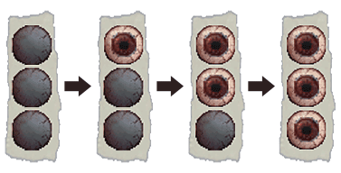
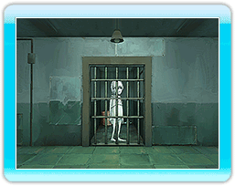
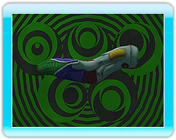

14 |
警告と“おひとりさま” |
 |
●警告とペナルティ
・監守にyouコンを使っているところを見られる
上記のいずれかが発生すると、監守から警告を受け、ペナルティをひとつ課せられてしまいます。
 受けたペナルティ数はペナルティアイコンとして表示されます。
 “おひとりさま”
●マッサージ “おひとりさま”にてWiiリモコンを数回振ると、youコンと会話をすることができます。youコンは、長い待ち時間を緩和するために、「マッサージ」をさせてくれます。Wiiリモコンをyouコンの体に見立てて操作します。

youコンのセリフをよく聞いて、ここだと思うツボを押しましょう。youコンの頭から黄色いものが出る場所を押し続けましょう。黄色いものが出なくなるまで押しつづけるのがコツです。
※マッサージではWiiリモコンの音量と振動を使用しなくてもクリアできるようになっていますが、使用したほうがよりわかりやすくなるでしょう。 |
 |
 |
 |